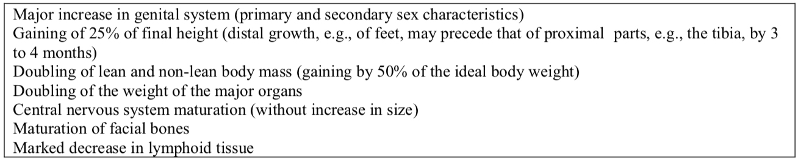
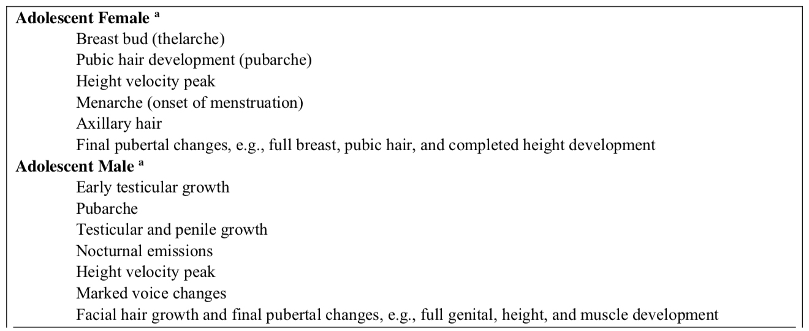
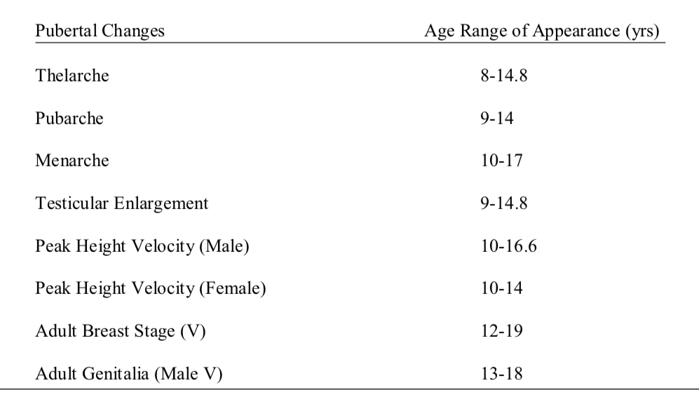
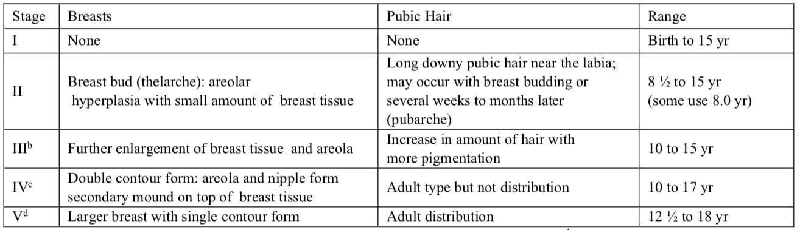
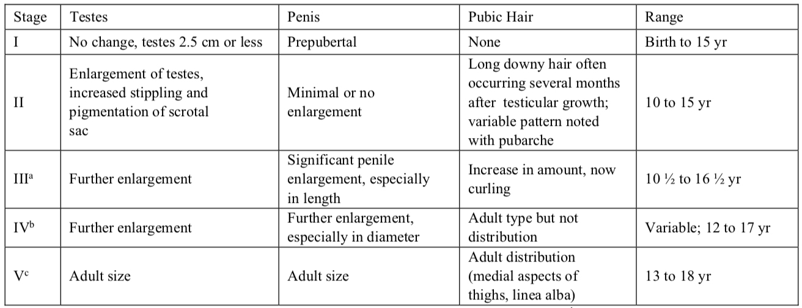
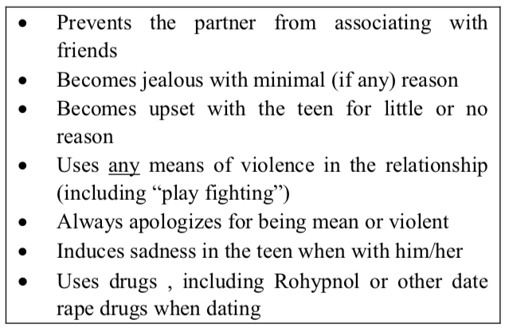

Human sexuality
Greydanus, Donald E, MD, DrHC (Athens); Pratt, Helen D, PhD . International Journal of Child and Adolescent Health ; Hauppauge Vol. 9, Iss. 3, (2016): 291-312.
Human sexuality is a complex phenomenon involving the interaction of one's biologic sex, core gender identity, and gender role behavior. Successful completion of normal stages of sexuality development is important for children and adolescents to allow for optimal life as an adult. Controversies arise for clinicians as they work with their pediatric patients regarding health care sexuality issues. It is important that clinicians help these patients in an unbiased and neutral manner. As adults, these children and adolescents will function in a number of sexuality roles, whether heterosexual, homosexual, or bisexual. This paper reviews many of these complex and critical issues that involve the fascinating development of human sexuality in pediatric patients.
LINKS:
Check for full text in other resources
Headnote
Abstract Human sexuality is a complex phenomenon involving the interaction of one's biologic sex, core gender identity, and gender role behavior. Successful completion of normal stages of sexuality development is important for children and adolescents to allow for optimal life as an adult. Controversies arise for clinicians as they work with their pediatric patients regarding health care sexuality issues. It is important that clinicians help these patients in an unbiased and neutral manner. As adults, these children and adolescents will function in a number of sexuality roles, whether heterosexual, homosexual, or bisexual. This paper reviews many of these complex and critical issues that involve the fascinating development of human sexuality in pediatric patients.
Keywords: Childhood, adolescence, sexuality, human sexuality
Sexuality education is the knowledge that we are all sexual human beings, that our sexuality is part of our lives and can be an enhancement or enrichment of our total personality.
(Mary Calderone, MD, 1904-1998)
Introduction
Human sexuality is a complex phenomenon involving the interaction of one's a) biologic sex, b) core gender identity (sense of maleness and femaleness), c) gender role behavior (nonsexual as well as sexual), which d) combine with our values, attitudes, feelings, interactions, and behaviors to impact the manner in which an individual expresses his or her sexuality (i.e., emotional, social, cultural, and physical (1-4). An individual's sexuality continues to develop from conception through adulthood, until death. During infancy the typically developing youth learns to experience basic sensations in their bodies which are focused on the senses (touch, smell, taste, temperature, sight, smell). They leam pleasure, discomfort, and satiation through these senses and interactions with care givers and the environment. As they mature these youth are constantly learning about the social norms regarding their sexuality; they learn what is expected or appropriate in their interactions and relationships with parents, siblings, cousins, and others in their environment. The healthy sexual development of infants, children, and adolescents determines how they proceed with other stages of sexual development.
Psychosexual development
Sexuality begins at birth or even at conception. At age 8-10 months, infants become aware of their genitalia (penis or vagina) and by the age of three, they usually have developed a fixed gender identify. By the time of their fourth birthday, they perceive themselves as being either boys or girls for life. Many scholars have used the work of Freud to understand sexual behaviors designed for adults to describe the sexual development of infants, children, and adolescents (3, 5). This view is currently conflictual, because it does not address what we know about early youth development.
Most child specialists agree that youth who have not been exposed to sexual trauma, assault, or abuse by late adolescence are expected to have developed a good self-image, a sense of security, a willingness to trust others, and knowledge of what is right or wrong in his or her family, community, and society. Most societies agree that parents must first accept their children's gender, and, then, communicate to them that they are intact, beautiful, and well-formed. If this is not the case, major problems in adolescence and adulthood may unfold.
A review of normal childhood behavior reveals that physiologic components to sexuality are evident at an early age (see appendix A and B). During the first year of life (infancy), exploration is through mouthing, sucking, and touching while trust in the caretaker develops. Infants learn to be sexual by touching and being touched; they learn from how they are held, soothed, or nurtured; this impacts their emerging sexuality and sets the stage for their sexuality throughout life.
Sexual exploration may involve the skin as a source of warmth and food (the mother's), or the infant's own skin as an erotic organ and some genital touching. Male erections are noted even in utero; orgasm as a neurophysiological phenomenon can occur as early as the fourth month of life and is common in males 6 to 8 years of age (2, 5-8). Parents should be encouraged to view infant male erections not as sexual but as normal physiological responses as the infant matures. Female newborns often have leukorrhea or vaginal discharge as a result of maternal hormones. Parents should be encouraged to ask questions of clinicians when they observe behaviors or bodily functions they do not readily understand.
During the toddler period (ages 2-3 years) children develop mobility, and language skills; the process of autonomy is noted and parents learn to deal with the word "no!" The toddler also learns what boys and girls do, how sex roles are different, and the names of body parts. Masturbation or self-genital manipulation for pleasure is very common between ages 2-6 years. During this period of development children become increasingly aware of the differences in males versus females. Their exploration is labeled as sex play but is simply a part of how humans learn (experimentation and exhibitionism) (3).
Sexual exploration is a common behavior for most children by the age of 13 years (e.g., self exploration, involving other children: looking at or touching bodies of another child with or without clothing; simulating intercourse with another child, is less common; inserting an object in the vagina or rectum of another child or engaging in oral-genital contact is rare). Unless these children have been exposed to pornography or sexually abused, the motivation for their behavior is curiosity. Parents should provide visual and auditory supervision at all times for young children through early adolescence; this limits the nature and extent of behaviors related to sexual curiosity (see Table 1) (9).
Sexual curiosity is a part of normal developmental phenomena, and parental attitudes are a major influence on attitudes that children develop about sexual behavior and feelings. As noted by Mary Calderone (1904-1998):
Whatever happens, it is clear that by the time the child arrives at school, it has already received, for good or ill, the most profound as well as the most unchangeable sex education it will ever receive in its life.
If a parent finds a 4-year-old masturbating and aggressively reacts to inform the child it is "unclean" and not "respectable", the child clearly learns to associate normal sexuality with negativism - a lesson carried throughout his/her life. If the natural curiosity of the latency age child is totally repressed, the child receives the wrong message about human sexuality (see appendix A).
As the grade school child transitions into adolescence, their interests and actions regarding their sexuality expands. The manner in which the adolescent deals with his/her sexuality is far more influenced by what he/she experienced as a child at home, viewing and interacting with parents, than from what they may learn during adolescence (8-10).
Adolescence is the critical period of physical, psychosocial, as well as cognitive growth, leading from childhood to maturation and adult life. Puberty is the word used to describe the physical-somatic changes of adolescence. During the adolescent years, the individual must develop a healthy self-esteem and also sexual comfort-learning to deal with those in his/her "sexual" universe. Adolescent sexual development is important for the process of identity formation and the establishment of mutually satisfying friendships, romantic, and social relationships among peers.
Attitudes and sexuality: masturbation
An historical view of masturbation shows that for centuries, this persistent aspect of sexuality was condemned as sinful and/or harmful to human health. During the early part of the 20th Century, authors stressed that masturbation as such may not be harmful, but guilt over such worry certainly can be injurious to mental health. By the middle of the 20th century, many physicians accepted this concept and numerous researchers began to study masturbation as a very common aspect of normal human sexuality. It was noticed that genital self-stimulation for pleasure is practiced by most adults in some manner or other without deleterious effects on human physiology (8, 11).
Current teaching among academic medical, pediatric or psychological groups is that masturbation is not harmful by itself and can be useful as part of a therapeutic approach to correct various sexual dysfunctions. However, "excessive" masturbation in infants may result from such problems as pinworm infestation, diaper dermatitis, tight clothes, nonspecific genital pruritus, phimosis and other medical conditions. Certain masturbation variations can be harmful; an example is the adolescent sexual asphyxia syndrome - in which the young person attempts to partially hang himself/herself by the neck ("partial hanging") while masturbating in order to achieve an orgasm. Peer and "peer" journals may advise youth about masturbation and encourage them to masturbate in order to relive sexual tension.
Parents may continue to worry about the "perceived" effects of masturbation on their children. Thus, anxiety about masturbation and other important aspects of human sexuality remains today, especially because comprehensive sex education is rarely allowed for children and youth in the United States (7-9). Parents often do not realize that they have the greatest influence on the sexual decision making of their youth. It is essential that parents acquire a broad knowledge of human sexuality, which is consistent with their own moral philosophy and culture, and then share that information with their offspring. Young children often reflect parental attitudes, ignorance, and uneasiness about sexuality with resultant negative effects. Health care professionals can assist in enlightening and encouraging parents to help their children develop healthy sexual attitudes, beliefs, and behaviors, as they interact with children and youth.
Puberty
The hallmark of adolescence is the process of puberty (see Table 2), a very significant neurobiological event that has profound effects on the growth and development of the each child, preparing the way through the developmental stage of adolescence and eventual adulthood (9). The exact trigger for puberty is not yet clear, but it involves central nervous system (CNS) maturation with reduced hypothalamic sensitivity to gonadal steroids by changes in the GnRH pulse generator; there is also adrenal gland maturation (3, 7-10). The progression (see Table 3) through puberty is predictable, but there is considerable variation in its onset, timing, tempo, and magnitude of changes (see table 4). There are 5 stages of pubertal development due to hypothalamic pituitary-gonadal maturation, called Sexually Maturity Ratings (SMR) or Tanner Stages (see Tables 5 and 6).



Eventually there is a rise in gonadotropins (Follicle Stimulating Hormone [FSH], Luteinizing Hormone [LH]), sex hormones (i.e., estrogen, testosterone), adrenal gland steroids, growth hormone, insulin-like growth factors (IGFs or somatomedins) and other hormones. Thelarche (breast budding or SMR 2) is the first clinical evidence of puberty in females, developing between 6 and 14 years of age, typically between 11 and 12 years of age; menarche (onset of menstruation) usually follows in 1 to 3 years in SMR 4, often between 12 and 13 years of age (range of 10 -17 years) (9). The first clinical event of puberty (SMR 2) in the male is enlarged testicles (over 3 mL or 2.5 cm in diameter) and scrotal thinning; ejaculation is seen at SMR 3 and fertility at SMR 4 (9-18).
The growth spurt results in the final 25% of the adult height and is an early pubertal event in females (SMR 2) often at age 11.5 years and a late pubertal event in males (SMR-4), typically at age 13.5 years of age; the average growth spurt lasts 24 to 36 months. Those who have early (precocious) or late (delayed) puberty can have considerable psychosocial consequences (8, 9). For example, the female and male who develop much earlier than peers, may be subjected to sexual behavior (including harassment or abuse) much earlier than peers who develop puberty at an expected chronological period.


Puberty stimulates more interest in sexual behavior and emotions in the growing and rapidly changing adolescent. Some youth may experience crushes on non-parent figures; this is common in both sexes, and includes interest in teachers, youth leaders, coaches, and others. If adults misinterpret these "crushes," sexual abuse results with severe negative consequences for this adolescent. The influence of parents' reactions to these changes and that of the family's religious teaching have profound effects on how adolescents deal with these emerging concepts of human sexuality (9-18).
Young teen males may be concerned about spontaneous erections, nocturnal emissions, and same-sex sexual thoughts and experimentations (10, 18). Males may also be concerned about the development of gynecomastia, or the usually transient development of breasts noted in as many as two-thirds of SMR 2-3 males. Though usually resolved in 12 to 18 months, gynecomastia may cause confusion about male identity and intense anxiety while undressing in front of peers in physical education classes. Reassurance from the trusted clinician about the benign nature of this phenomenon is very helpful to these males, though temporary release from situations of being undressed in front of peers may be necessary; surgery is also necessary in some situations of persistent gynecomastia, large breasts, or severe psychosocial stress. Education about important aspects of puberty is an important and needed task for primary care clinicians.
Females may be worried about vaginal discharge (estrogen-stimulated "physiologic leukorrhea"), nocturnal sexually-oriented sex dreams, same sex interests (including sexual experimentation); females also worry about breast development (delayed onset and size); they worry if they have not developed breasts when their peers develop them; they worry if they develop breasts larger than their peers (7-10). Females who develop large and heavy breasts may experience back pain and be subject to harassment and abuse by peers and others. The onset of puberty begins the battle with the effects of acne vulgaris, body odor, seborrheic dermatitis, and other dermatologic effects of puberty which may cause both males and females to be concerned.
Normal adolescent psychosexual development
Adolescent psychosocial and cognitive development is typically divided in three classic periods: Early, middle, and late adolescence (see appendix B) (7-19). The young adolescent resumes previously acquired interest in the development of interpersonal relationships. Typically, the youth approaches this from a narcissistic viewpoint in which the individual's interest comes first and concerns of others are not considered. This "selfish" attitude starts with those of the same sex and extends to those of the opposite sex during mid-adolescence. First, there is exploration of one's own body linked with concerns of normality; then comes the comparison with peers of the same gender. Interest towards the opposite sex finally occurs; it is basically platonic for early adolescents and it is gradually expressed through sexual experimentation during middle adolescence.
Considerable energy is spent acquiring social skills and friendships with same-sex individuals. Thus, boys tend to develop "gangs" of males who engage in various behaviors, as each member tests the others in diverse aspects of adolescence. Definitions of masculinity are tested and confirmed within such groups. Homosexual experimentation and considerable false braggadocio about sexuality are quite common.
Girls tend to associate with a few very close girlfriends and then, to a lesser extent, deal with a larger group of females. The extent of female masturbation and homosexual experiences is unknown, but is probably less than that reported in males. This early adolescent phase of development is often referred to as the homosexual phase and is considered normal.
Middle adolescence is typically called the heterosexual stage, as youth acquire diverse experiences with the opposite sex; these experiences can be quite short (even one or two days) and intensive (see appendix B). Adolescents in this stage of cognitive and emotional development have limited abstract thinking and perspective taking ability and empathy for others. They are often viewed as "selfish"; this is normal for these youth. They often have idealized views of relationships and may engage in serial monogamy because they are unable to think about long range outcomes of current behavior. During middle adolescence, depending on the youth's self-image, opportunity, and parental influence, there is a normal sequencing of this heterosexual development. It begins with interest in the opposite gender, same gender, or both and is followed by group dating, individual dating, and eventually sexual intimacy. Such intimacy runs an individual course including hand-holding, superficial versus "serious" kissing, petting, oral sex, anal sex, and/or vaginal coitus.
Late adolescence is a time when parents and clinicians must attend to issues of helping youth develop the ability of having functional non-selfish relationships, emancipation, sexuality, sexually transmitted diseases, pregnancy, and grand parenting. Clinicians, parents, and caregivers must begin to address these issues and prepare these youth for coping with the risks and rewards of living to adulthood. In the US most people believe that late adolescence is normally the time to begin consideration of available adult lifestyles (see Table 10) (6-9, 18-23).
Sexual behavior among youth
By 2009, over 66% of adolescents said that by age 18 years they had engaged in vaginal or oral-genital sexual activity, 20% of adolescents said that they did not engage in any form of sexual behaviors. The 2013 Centers for Disease Control and Prevention Youth Risk Behavioral Surveillance (YRBS) noted that 46.8% of high school students had ever had sexual intercourse, 34% had sexual intercourse during the 3 months prior to this survey, and 15% had sexual intercourse with four or more persons during their life (12, 25).
Adolescents who were sexually active reported that about 50% had engaged in both types; 10% said they had engaged in anal intercourse; the report noted that 47% of high school students (12-18 years of age) and 46.8% of high school students (9th - 12th grades) were coitally experienced; only 34% were active at the time of the survey but only 59.1% of those youth used a condom (4, 6, 7, 9, 17, 24-27). AfricanAmerican students (71.2%) reported the highest rates of coital experience, followed by Hispanic (54.1%), and Caucasian (45.1%) students. Forty-one percent of sexually active adolescents reported that they had two to three sex partners, 15% had four or five partners, practiced serial monogamy (having one partner at a time, though often for a short time); 41% used no condom; 81% used no birth control to prevent pregnancy; 22% drank alcohol or used drugs before sexual intercourse. In the 2013 YRBS 59.1% had used a condom during their last sexual intercourse (25). Only 5.6% of these students reported being coitally active before age 13 (12.2% for males, 4.4% for females).
Oral sex
Some youth engage in oral sex either before engaging in sexual intercourse or as a substitute for intercourse (26, 27). One possible reason for this change stems from the heavy emphasis that has been placed in all forms of sex education and literature upon "safer sex." Another reason for this increase in oral sex may be linked to the return of concerns among girls and young women about maintaining their virginity. Some argue that oral sex prevents pregnancy but not STDs, controversy exists over whether oral sex is "really sex." This allows some to say they engage in "abstinence" so still remain a virgin. Some females contend that they are in control since it is something that they can do to boys. Some researchers offer that girls who provide fellatio may do so because of peer pressure in pursuit of an elusive social status and popularity. There is little to be gained from an abstract contest between empowerment and exploitation since normative assessment is only possible in the light of the contextual circumstances of specific sexual encounters. Overall data on oral sex in a Midwestern rural population and found that 29% of the students in the 6th-12th grades (mean age of 14.7), had engaged in oral sex (with 9% of middle school and 44% of high school students). Over half of these subjects were male (51%) and Caucasian (85%) (16).
Oral-genital, vaginal, and anal intercourse
In a study of the prevalence and relative timing of oral-genital, vaginal, and anal intercourse during adolescence reported that 20% of adolescents said that by age 18 years they had not engage in any oral genital, vaginal, and anal intercourse sexual behaviors (26, 27). More than two-thirds reported vaginal or oral-genital sexual activity, but only about half experienced both; 10% reported anal intercourse; 33% initiated 2 or more behaviors within a 1-year period. Vaginal intercourse was more often initiated prior to oral-genital or anal intercourse. Physicians must ask adolescents about the forms of sexual experiences and provide comprehensive information about sexual health (25, 27).
Adolescent pregnancy
Data available from the 2010 National Vital Statistics System (NVSS) reported that adolescents in age groups 10-14, 15-17 years (17.3 per 1,000), and 1819 (58.3 per 1,000) years had the lowest birth rate in the United States (34.3 per 1,000) since 1950 (28, 29). In spite of these declines, the US teen birth rate remains one of the highest among other industrialized countries. The 2010 total of births to teenagers was 43 percent lower than the peak recorded in 1970 (644,708). The declines were across all ethnic groups: Non-Hispanic whites (23.5 per 1,000), Non-Hispanic blacks (51.5 per 1,000), Hispanics (55.7 per 1,000), American Indians or Alaska Natives (38.7 per 1,000) and Asian or Pacific Islanders (10.9 per 1,000). Despite these declines across all adolescents in the United States, childbearing by teenagers continues to be a matter of public concern because of the elevated health risks for teen mothers and their infants. In addition, significant public costs are associated with teen childbearing, estimated at $10.9 billion annually. Differences in rates of pregnancy tended to be highest in the South and Southwest and lowest in the Northeast and Upper Midwest, a pattern that has persisted for many years.
Strong pregnancy prevention messages directed to adolescents increased use of contraception at first initiation of sex and use of dual methods of contraception (that is, condoms and hormonal methods) among sexually active female and male teenagers may have also contributed to birth rate declines. Recently released data from the National Survey of Family Growth, conducted by the Centers for Disease Control and Prevention's (CDC) National Center for Health Statistics (NCHS), have shown the recent birth rate declines (28).
Sexually transmitted infections
In 2009, 6.7% of the estimated 1.1 million persons living with human immunodeficiency virus (HIV) infection in the United States were youths aged 13-24 years; 59.5% of those infected with HIV were unaware of their infection (23-31). Youth accounted for 12,200 (25.7%) new HIV infections in 2010. Of these, 57.4% blacks/African Americans, 19.6% Hispanics/Latinos, and 19.5% among whites. About 72.1% were attributed to male-to-male sexual contact. However only 12.9% among high school students and 34.5% among those aged 18-24 years; were ever tested. Fewer males than females of infected youth were ever tested and fewer whites and Hispanics/Latinos than blacks/African Americans were tested. A disproportionate number of new HIV infections occurs among youths, especially blacks/African Americans, Hispanics/Latinos, and men who have sex with men (MSM). Black/African American youths and young MSM (males have sex with males) are at the highest risk for infection even with similar levels of risk behaviors.
Young people in the United States remain at risk for HIV infection. An estimated 56,300 Americans are infected with HIV each year (1). Of these, 34%- or approximately 19,000-are adolescents or young adults aged 13-29 years. Young men who have sex with men (YMSM), especially black YMSM, are at highest risk (32). This data highlights the ongoing risk for HIV infection among YMSM and underscores the need to reach each new generation with effective HIV prevention messages and services (31-33). Schools and education agencies are important partners in this effort.
Among adolescent males aged 13-19 years, approximately 91% of all diagnosed HIV infections are from male-to-male sexual contact. In 2009, 73% of all diagnosed HIV infections in youth aged 13-19 years were among black youth, even though blacks represented only 17% of the population in that age group versus white YMSM (18%) and Hispanic/Latino YMSM (16%) adolescents (32).
Young women are at risk for HIV, other sexually transmitted infections (STIs), and unintended pregnancy; they often do not seek sufficient health care and their infections often go unrecognized. YWSW have complex health care needs and should be encouraged to protect themselves. They often do not seek routine gynecological care. Several studies of YWSW, WSW, and bisexual women conclude that these 17-30% of these women are at risk for STIs.
Sexually experienced girls who have sex with girls or women consistently engage in riskier behaviors than did other girls. Lesbian girls' reports of risky sexual behaviors (e.g., sex under the influence of drugs or alcohol) and negative reproductive health outcomes (e.g., pregnancy) were similar to those of bisexual girls (6, 20, 29).
Factors that impede normal sexuality development
In the 21st century, pediatric sexuality develops in a society characterized by a rapidly changing environment, intense migration, and expanding opportunities to communicate with others in a modern global network that has become a widely-used resource for sexual health information among adolescents around the world. Major problems for childhood and adolescent sexuality that are emerging in today's global society include a change in the concept that heterosexual relationship is the norm, the development of casual relationships, and changes in what is termed the love ideology.
Widespread concerns about adolescents' exposure to sexually explicit images sent by smartphone or internet - commonly known as "sexting" - appear to be based on exaggerated reports (6). Less than 10% of youth in a national survey of minors aged 10-17 years had received and only about 2 percent had appeared in or created such images (6). Females were more likely to create or appear in the nude or nearly nude pictures or videos, and over half of such images were generated between senders and recipients as part of a romantic relationship.
There is a noticeable cultural difference in the acceptance of and breadth of the casual relationships in youth. Examples of visible changes in the love ideology among young people throughout the world include the increase in the number of sexual partners, a rise in casual sex episodes, more openness admission of and acceptance to group sex relationships, and open discussion among youth as well as the increased popularity of such relationships as a sex buddy (f*** buddy or FB), friends with benefits (FWB), and sexualized friendships.
Youth exposure and access to mass media has an enormous influence on children and adolescents around the world in which sex is often presented as a casual pastime that is normative behavior without negative consequences. The media (television, movies) presents the message that "everyone is doing it and having fun." Some youth view oral sex as not "real sex" and use it to maintain a state of "technical" virginity, not realizing that sexually transmitted diseases are also acquired with this form of sexual behavior including chlamydia, gonorrhea, syphilis, trichomoniasis, hepatitis B, herpes, human papillo virus infection (HPV), and human immunodeficiency virus (HIV) (30,31).
Youth who do not experience typical development may experience psychological and psychosexual problems. The developmental tasks for the young help them to refine skills developed during adolescence which enhanced their transition into adult roles; those who simultaneously experienced chronic illness and disability may not have had the opportunity to accomplish developmental milestones (see appendix B).
Sexual abuse
An overview of healthy childhood sexual development promotes an understanding that healthy childhood sexual development plays a key role in child sexual abuse prevention (34-38). Many adults are never taught what to expect as children develop sexually, which can make it hard to tell the difference between healthy and unhealthy behaviors. When adults understand the difference between healthy and unhealthy behaviors, they are better able to support healthy attitudes and behaviors and react to teachable moments. Rather than interpret a child's actions with an adult perspective of sex and sexuality, adults can promote healthy development when they understand what behaviors are developmentally expected at different stages of childhood.
Although most data on sexual abuse is focused on females, recent research is acknowledging that males are also sexually abused (see chapter 35). Worldwide prevalence of child sexual abuse in 21 different countries was found to be between 0 to 53% of women and 0 to 60% of men over the years. Sexual abuse is reported in 13% of females aged 13-14 in the United States; forced coital behavior occurs in over 70% of sexually active females under 14 years of age and 60% in sexually active females under age 15. Forced sex among sexually active teens occurs in 74% at 13 years of age, 60% at 14 year of age, 40% at 15 year of age, and 15% at 19 years of age. In the 1999 YRBS, sexual assault was noted in 12.5% of high school females and 5.2% of males. The 2013 CDC YRBS noted that 7.3% of high school students had ever been physically forced to have sexual intercourse against their will (25).
The 2001 Youth Risk Behavior Survey reports 10% of high school girls with forced coitus in contrast to 5% of the males. There were 272,350 over 40% victims of sexual assaults (including rapes and attempted rapes) were under the age 18 years and an estimated one-sixth being under age 12. Factors increasing chances of being sexually assaulted include hitchhiking, living on the streets, and prior assault. Unwanted sexual overtures and harassment can even occur over the internet. The 2013 CDC YRBS noted that 14.8% of high school students had been electronically bullied (25, 33-35).
Dating violence
Up to 87% of high school students receive unwanted sexual comments or actions at school-lewd comments, jokes, being touched or grabbed by others (6, 13, 15, 36-38, 40, 41). Studies suggest that the majority of female youth eventually become victims of some violence while dating (35). This may be physical, verbal and/or sexual in nature. As many as 60% of adolescents experience dating violence and this involves youth from all ethnic groups and socioeconomic strata. Studies with college students note dating violence in 36% of the males and 59% of the females. Acquaintance or date rape may be the cause in 60-70% of adolescent assaults. The 2013 CDC YRBS noted that 10.3% of high school students reported physical dating violence; the prevalence was 13% among females and 7.4% among males (25). Sexual dating violence was reported in 10.4% in the 2013 CDC YRBS. Parents who have promoted healthy sexual development in their youth are better equipped to intervene when there are concerns related to behavior or abuse (see Table 7).

Risk factors for adolescent members of sub-populations
For several sub-populations of adolescents, comparatively little data is available (20, 33). Existing evidence indicates that these youth exhibit behaviors or live-in environments which place them at higher than average risk for HIV, other sexually transmitted infections (STIs), unintended pregnancy, sexual abuse, and other preventable sexual health problems. These populations include LGBT (lesbian-gay bisexual-transgender) youth; rural youth; youth with disabilities; certain immigrant youth; runaway, homeless, and "street" youth in unstable living situations; youth living with HIV; and youth in the custody of the foster care or juvenile justice systems. Until there is more nationally-representative data about such youth, policy makers and program planners will face challenges when seeking to promote the sexual health and well-being of these young people
Impact of obesity, chronic illness, and disability
Major physical changes of puberty may be impaired as a result of disease or illness: a) genitalia may not develop primary and secondary sex charactristics, b) the expected gaining of 25% of final height doubling of lean and nonlean body mass, and weight of the major organs c) maturation of central nervous system maturation and d) facial bones and marked decrease in lymphoid tissue (see Tables 2-6) (9, 10, 23, <24, 39).
Female may not experience sequential changes of puberty at expected ages (breast bud development or thelarche), pubic hair development (pubarche), height velocity peak, menarche (onset of menstruation), axillary hair, final pubertal changes (e.g., full breast, pubic hair, and completed height development). Males also may experience accelerated, delayed or non-existent sequential pubertal changes (early testicular growth, pubarche, testicular and penile growth, nocturnal emissions, height velocity peak, marked voice changes, facial hair growth and final pubertal changes, e.g., full genital, height, and muscle development).
Youth who are obese
Obese adolescents can be sexually active and become pregnancy and/or develop sexually transmitted diseases; they can also be sexually harassed and abused. These potential consequences of being obese alone can derail healthy adolescent sexual development. Research shows that not all obese adolescents grow up to be maladjusted (40). However, many of the psychosocial outcomes of obesity are also common psychosocial outcomes of adolescence; additionally, physiological and biological processes of adolescence may promote or predispose overweight in females and obesity as one of the factors that influence sexuality in adolescents.
The expression of sexual desire is shaped by the individual's obesity, chronic illness, mental or physical disability. These youth are sexual beings and have sexual desires similar to those of their healthy peers who do not have chronic illnesses or disabilities. Adolescents with chronic illnesses and deformities (including cerebral palsy, spina bifida, and others) are also invested in the development of their sexuality, even if society and parents are not focused on these issues. Growing youth worry over their changing bodies, and disabled adolescents need to learn to accept actual abnormalities and tolerate deviations from an idealized body image. For example, youth with colostomies become anxious about being accepted because of odor, while those with arthritis become concerned about problems with pain as well as limitations. Some chronically ill teens are stimulated to coital activity to prove normalcy, while others are slow to develop healthy sexuality; the clinician can be of considerable help to both groups to encourage normal sexual development. Parents and clinicians should seek to help adolescent females develop a positive self-esteem and body image despite impaired fertility noted with various genetic and endocrine disorders.
Chronic illness, neurodevelopmental disorders, physical disability
Some "sub-group" adolescents may engage in sexual activities to gain peer acceptance, approval or to prove that they are "normal" and can do what they see modeled in the media by their thin, healthy peers (9, 27, 38, 39). However, this same reaction can occur in adolescents who have physical disabilities, mental illness, chronic illness, poor social relationships, and other issues. These same groups are more victimized, date less, and are less satisfied with their dating status than are their peers. Because adolescents rely on their peers for the development and maintenance of their self-image, self-acceptance, and sense of belonging, the rejection that these youth experience from their peers can have devastating effects on their social and psychological health.
Youth who are runaways
There are an estimated one million runaway youths, and an estimated one million adolescent prostitutes (male and female) who exist in the United States. Some youth run away from home while others are thrown out by parents or guardians ("throwaways"), leading to a harsh life on the street as homeless youth (<13,39-47). Many will turn to prostitution, using survivor sex as a way to remain alive. Children and adolescents living on the streets of the world are the product of war, poverty, domestic violence, and abuse (physical, sexual, mental).
Youth who are homeless
The average age range of first leaving home is 12.4 TO 13.9 years old and 550,000 youth leave home each year (27, 41, 42). Homelessness lasting longer than one week, 380,000 are younger than 18, 170,000 are ages 18-24, and 1 in 5 identify as LGBT. Also, 1 in 3 runaways have been forced to perform a sexual act against their will and are often engage in survival sex (to get money, food, a place to stay, or drugs) and are sexually assaulted. Other data note that 32% of homeless youth have attempted suicide, 1 in 3 teens on the street will be lured into prostitution within 48 hours of leaving home, and 46% of LGBTQ youth run away because of family rejection of sexual orientation or gender identity; also, they are depressed and have been diagnosed with conduct disorder as well as posttraumatic stress disorder.
Homeless youth are subject to many dangers of the street-as physical/sexual abuse, substance abuse, sexually transmitted diseases, various medical disorders and others (36, 39). Their main medical treatment is usually through the local hospital emergency department, if they receive any care at all. Estimates of the number of children and adolescents who live on the world's streets range from 30 million to 170 million. Children and youth are sold into slavery and prostitution in various parts of the world. There are an estimated 1 million children abducted or coerced into the global sex trade industry each year. Estimates suggest there are 300,000 child soldiers around the world-some as young as 10 years of age. Their duties are varied, from overt soldiers to providing sexual services for the older solders.
Conclusion
Primary care clinicians should understand and appreciate the importance of sexuality in the lives of their pediatric patients (39, 43-46). All of the critical components to healthy child and adolescent development are equally important to the development of healthy sexuality. Normal sexuality is a critical part of normal growth and development. Children and adolescents need knowledgeable health care professionals who can supplement the parents' teaching about human sexuality in a confidential and sensitive manner. Teens with chronic disease can have high rates of sexual activity and low rates of contraceptive use (8). The consequences of sexually transmitted infections and pregnancy in this population make it especially important for clinicians to assess for unprotected sexual activity.
Primary care clinicians should understand and appreciate the importance of sexuality in the lives of the children and adolescents they care for in their practices. Clinicians can encourage parents to nurture and promote development of healthy sexual attitudes and health in their children and adolescents by using a life skills approach. They must teach, support, and encourage behaviors that enable their youth to adapt to and deal effectively with the demands and challenges of everyday life at each stage of development. These skills include guiding the cognitive, emotional, and social relationship skills in their youth which include teaching family values and why those values are important to their families. Youth should be taught cognitive skills such as a) critical thinking skills b) problem solving skills, c), decision making skills, and d) the ability to clarify and analyze information. Teaching youth to manage their emotions includes: a) the ability to cope with stress, b) how to soothe themselves or calm down when they are upset, c) how to manage anger, and d) how to ignore people or words that cause them to be upset.
Parents also need to help their youth learn effective communication skills (i.e., how to engage in conversation, how to say what they intend to say, how to engage in active listening, and how to be understood by others) (17). Learning empathy, assertiveness, conflict negation are also essential skills parents must teach to their children and adolescents. Youth learn these skills by interacting with their parents and mimicking their parent's behaviors. This teaching starts at birth between parents and youth. These skills are the foundation for raising youth with healthy sexuality development.
Normal sexuality is a critical part of normal growth and development. Children and adolescents need knowledgeable health care professionals who can supplement the parents' teaching about human sexuality in a confidential and sensitive manner. Clinicians can also learn about potential problems with sexuality development, including unwanted pregnancy, sexually transmitted diseases, sexual assault, dating violence, homosexuality and others. Adolescents, who are not sexually active, can be encouraged to continue in this lifestyle. Those who choose to be sexually active need information about STDs/STIs (safe sex) and pregnancy prevention (i.e., contraception), counselling about fertility, sexual dysfunction, and other essential aspects of sexuality.
Advice about sexuality should be provided in a friendly, confidential, and safe manner. The attitudes and beliefs of clinicians can influence their ability and willingness to provide counsel for teens regarding sexual orientation, pregnancy, abortion, contraception, and STDs. Clinicians can introduce the subject of sexuality into the doctor-patient communication on a regular basis and set the youth at ease while talking about sexuality. Youth may have a hidden agenda regarding various aspects of sexuality, and clinicians should be attuned to this agenda. A number of factors can compromise sexual health and careful screening will often uncover these issues. Sexuality involves various family, legal, ethical, moral, and religious issues and clinicians need training to be able to help these youth as these various factors influence the youth. Anticipatory guidance by clinicians is important to promote healthy sexuality development in children as well as adolescents and prevent complications (as unwanted pregnancy, STDs, abuse). Youth involved in abusive relationships need the guidance of trusted clinicians to steer them toward healthy adulthood.
Counselling can encourage the growth of various resiliency factors that promote healthy sexuality and healthy living, enabling these youth to deal with adversities and lead a productive adolescent as well as adult life. These factors include a sense of belonging with other peers, acquiring a healthy value system, receiving appropriate education (including sexuality education), and learning to enjoy the fascinating phenomenon of life itself. Youth need an adviser and a guide in life, one who can provide support and accurate education in important facets of life, such as human sexuality. One should follow local laws for confidentiality and provision of reproductive rights (42, 43, 46, 47).
Anticipatory guidance should emphasize the importance of protecting one's health, making good choices that allow for disease prevention and delay of pregnancy until the patient is mature enough to manage parenting. The concept of health promotion activities throughout the patient's life beginning with the delivery of the anticipatory guidance should be stressed demonstrated in their study that structured religious interventions delays the onset of coitus and offers protective effects for both coital and non-coital sexual behaviors (42, 43).